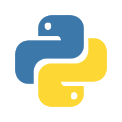

| 教育背景 |
|---|
2022年9月至今中南财经政法大学计算机科学与技术已修读课程：Web前端开发、程序设计、数据结构、计算机网络、操作系统、算法分析与设计、数据库系统、数据库管理实务、网络工程、汇编语言、数字逻辑、高等数学、线性代数等 |
| 工作经历 |
2022年9月~2024年6月信息工程学院志愿者协会项目部干事、主要负责人
|
2022年9月~2024年6月中南财经政法大学校学生会权益服务部学员、骨干
|
| 个人技能 |

HTML 5
CSS

PythonC++SQL语言汇编语言 |
| 竞赛经历 |
|
| 个人荣誉 |
|
| 自我评价 |
|
我始终保持着严谨的治学态度和踏实的工作作风，在“德、智、体、美、劳”各方面严格要求自己。 在思想上，我思想积极上进，政治立场坚定；作为党员发展对象，我在思想与行动上积极向党组织靠拢，在入党积极分子培训班中荣获“优秀学员”荣誉称号。 在学习上，我始终秉持着自主学习、多样化学习的理念，学习积极进取、严谨认真，同时力所能及地为同学们答疑解惑，学业综合表现良好。 工作上，我先后担任班级文艺委员、学习委员班委，积极投身班级建设；作为部门成员，我努力做好学生工作，把每一次工作尽全力做到最好。 学习工作之余，我积极参与各类志愿活动及社会实践，自立自强，常怀感恩之心、积极回报社会。回顾将近两学年的经历，我过得很充实，也在思想、学习、工作上都取得了新的进步，但我认识到自己仍然有许多不足，我也将再接再厉，努力在接下来的学习生活中取得新的进步。 |